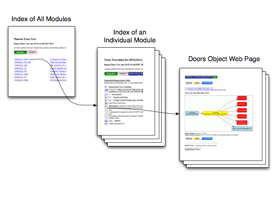
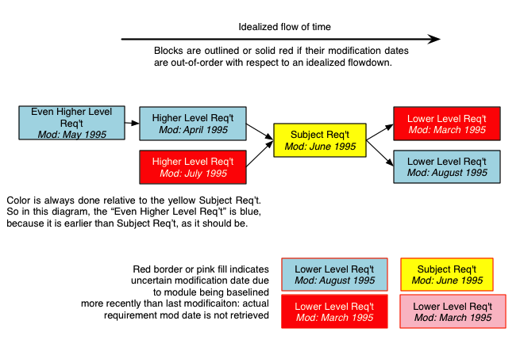

"Specials" now available from project index pages
| Project | Access contact* |
|---|---|
| TMT (TMT Requirements) | Gelys Trancho |
This website is intended to provide a quick, graphical way of navigating among all of the requirements recorded in DOORS for a project. The DOORS client itself, while powerful, is limited in its support for understanding and tracing the requirements flow along the links recorded in the database. It is also sometimes very slow, operationally, to show or trace linked requirements.
The Trace Tree provides the ability to trace up and down the links from any given requirement in the database. The requirements linked upward and downward are traced as far as possible from each given requirement, and displayed graphically. Each requirement in a project has its own web page in the Trace Tree. Requirements in a graph are shown as rectangular blocks in the graph, with various colors coding information about the requirements. Aside from the subject requirement (depicted in yellow), each requirement block is clickable, allowing easy navigation from the subject's page to the page of any other requirement on the graph. The blocks are generally arranged from left to right, with the left-most blocks representing the highest-level requirements.
These pages must not be used as definitive! They are meant solely as an aide, or tool, in dealing with the requirements. Only the DOORS database itself is completely up-to-date and contains all information related to requirements and the flowdown. Please see further explanation below for information on what is and is not included in these pages.
A consequence of this is that a module or entire project that is not getting any changes will not be updated at all, and it may appear that the Trace Tree reports are not being run.
Updates are routinely made once per day, in the early morning around 4:00 AM, and completing in an hour or so. Therefore, edits made to the DOORS project during the day will appear in the Trace Tree the next day.
Formerly, the trace trees eliminated certain types of objects such as table cells, or text with no "shall" in them. Now, however, almost every object in a DOORS module is included. Only deleted requirements are excluded; this is true even if the DOORS default view shows deleted requirements.
There are two levels of index for each project, and then a web page for
each DOORS object, or requirement.

The home page of a project's site lists each module and
its description. Each module listed is hyperlinked to its own module index,
which shows a view of the module similar to a "book" view as produced by DOORS.
In this view, the object ID of each requirement is clickable and is linked its own web page.
In the individual module view, it is possible to add attributes in columns to the right of the requirement text, but this must be set up in advance and is not changeable from the web page. Please e-mail me to make this happen.
Each individual requirement page shows:
Requirement modification date and times are used both textually and graphically to illustrate the timeliness of flowdown. Ideally, a requirement change starts at a high level and is followed in time by a response at each lower level. For example, one would expect that a change in the Project System Requirement Document (usually Level 2) would be followed at a future date by changes in at Level 3 (e.g. the Flight System), then the Level 4, and so on. Of course there are many reasons why this ideal situation may not hold. The purpose is to flag violations in the rule without making judgements as to whether there is a valid reason for it.
The graphical presentation of such violations is a red or pink box
color for the traced requirement. A red or pink box indicates that
the requirement's modification date is either later than the subject's
date for an "upstream" requirement, or earlier for a downstream
requirement. The comparison is always done with respect to the
subject (yellow) requirement's date, not with any requirements which
might be between them in the flowdown.

Modfication Date/Time is complicated by how DOORS stores this information. For each object, the "Object Text" attribute's most recent modification date/time is used preferentially (other attributes' history is ignored). If never modified, the object's creation date is used. However, if the object was created or modified previous to the most recent baseline of the module, then the module baseline date is used instead. This is because DOORS does not keep history from previous baselines of a module. (To obtain previous history, every baseline of every module would have to be kept open, a prohibitive operation.)
Requirements for which the modification date is actually the module baseline date are shown in pink rather than red if the date violates flowdown. If the subject requirement's modfication date is actually its module's baseline date, its yellow box is outlined in red.
On both the module pages and on the object pages, some modification of the text has necessarily taken place in order to preserve some formatting under HTML rules. This includes:
The upshot of this reformatting is that these pages must not be used as definitive! They are meant solely as an aide, or tool, in dealing with the requirements.
Two known bugs exist. Of course there may be others.